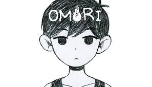
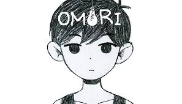

Eu tenho a mania de me projetar bastante nos filmes que eu sou apaixonado entao normalmente ou sao filmes com bastantes dialogos e desvaneios sobre o sentido da vida e o limiar da morte e livre abrtrio como 12 angry men e The sevenrh seal ou filmes sobre a busca pela perfeição como é o caso de Whiplash e Cisnei Negro.


Saiba mais sobre as sinopes e notas dos filmes aqui:
IMDb
Rotten Tomatoes
E não muito diferente dos filmes que amo os meu top 5 games favoritos da vida tambem seguem um padrao de historia com varios significados e que abordem a solidão como shadow of the colossus ou crises internas como katana zero.
Aqui estão algumas imagens dos jogos recomendados acima.
 


Acesse as páginas oficiais dos jogos recomendados:
| Categoria | Título | Nota IMDb/Metacritic | |
|---|---|---|---|
| Nome | Lançamento | ||
| Filme | 12 Angry Men | 1957 | 9.0 IMDb |
| Filme | The Seventh Seal | 1957 | 8.1 IMDb |
| Filme | Whiplash | 2014 | 8.5 IMDb |
| Filme | V for Vendetta | 2005 | 8.2 IMDb |
| Filme | Black Swan | 2010 | 8.0 IMDb |
| Jogo | Shadow of the Colossus | 2005 | 91 Metacritic |
| Jogo | Omori | 2020 | 87 Metacritic |
| Jogo | Katana Zero | 2019 | 83 Metacritic |
| Jogo | Undertale | 2015 | 92 Metacritic |
| Jogo | Sekiro | 2019 | 90 Metacritic |